Welcome to the Plazma Burst 2 Level Editor Manual. This manual will describe all the basic tools of the Level Editor, Its' identities and purposes.
Here is short description about what tools you can use.
FreeEdit tool - allows you to select, deselect, move, scale
objects. Supports
Key filtering features.
Add a Wall - allows you to create wall objects. Drag to specify
the size.
Add a Movale object - allows you to create a Movable object
or objects. Drag to specify the size.
Add a Region - allows you to create Region objects. Drag
to specify the size.
Add a Pushing area - allows you to create Pushing area objects.
Drag to specify the size.
Add a Background - allows you to create Background objects.
Drag to specify the size.
Add a Water area - allows you to create Water area objects.
Drag to specify the size.

Add a Player - allows you to create Player objects.

Add an Enemy - allows you to create Enemy objects.
Add a Vehicle - allows you to create Vehicle objects.
Add Decoration - allows you to create Decoration objects.
Add a Gun - allows you to create Gun objects.
Add a Lamp - allows you to create Lamp objects.
Add a Barrel - allows you to create Barrel objects.
Add a Trigger - allows you to create Trigger objects.
Add a Timer - allows you to create Timer objects.
Add an Engine mark - allows you to create Engine mark objects.
Add Song - allows you to create custom song objects that can be played using triggers. Might be able to download music only from limited list of domains, such as
https://freemusicarchive.org and
https://www.newgrounds.com (URL must be the song page URL, not file download link. Use
Engine Mark with modificator "
Enable level trigger error reporting" to catch song availability error messages). Make sure to mention song author in level description or map credits.
SelectionScale tool - allows you to scale selected objects.
Notes:
- With the Plazma Burst 2 engine, "Crate" and "Rope" objects
are "Vehicles".
- With the Plazma Burst 2 engine, "Allies" are "Enemies" (or "Actors")
unless they are on the same team as active Player.
- Player and Enemy objects will not collide if their team is set to "Alpha".
- Allies won't try to pick your gun if gun is meant for your and ally's team only.
- In the Plazma Burst 2 engine, the Lamp flare effect can be disabled.
- Destruction of Lamp objects does not guarantee lightmap recalculation. Game will stop trying to do so if first recalculation takes significant ammount of time for player.
- Some of Decorations will automatically generate a glowing effect with the
help of "Lamp object" with the flare effect disabled. Additionally they will remove "Lamp" objects around (just so old maps don't have doubled effect).
- None of Decorations collide. Their collision can be made with the help of
invisible Movable object(s).
- The "Pushing area" object can also deal 2 kinds of damage: basic and slicing. Second spawns hit particles and slices body in half on death.
- The "Killing ray Decorations" deal no damage by default. Their damage
can be created with the help of "Pushing areas" with slicing damage
enabled.
- With the Plazma Burst 2 engine, Acid is Water with damage turned on.
- "Background objects" are just the background walls. To change the
sky texture use the "Engine mark" object or Trigger logic.
- Shadows are generated only over Background objects in Plazma Burst 2.
- Plazma Burst 2 engine automatically creates Lamps with the
disabled flare effect around Background objects with the brightness based
on average brightness of current sky texture to generate the global illumination.
- Shadow appearance is based on the each player's game settings.
- Enemy object skills are based on the "difficulty level" which is
selected by player. In multiplayer, the difficulty level is "Impossible" by default, unless changed with Trigger logic.
- Manipulation of the gameplay and the level appearance can be done with help
of Engine mark object(s).
- Not all objects' properties are restored on round change in Multiplayer.
- Synchronization of most objects
isn't done automatically in Multiplayer. Synchronization of movables, for example, will require additional Trigger logic.
Sometimes, when you test your map you might see some Errors.
To avoid any type of Errors, we recommend testing your map from time to time
during it's development. This way when your map has an error, it will stop working
and you will know what the problem is and the problem could be connected with
recent changes/additions made to the map.
But still, Errors can occur sometimes. Feel free to ask on our forum about any
questions or issues you might be experiencing and we will try to help you. Each
time you ask for help on a certain Error please specify the:
Map ID
of the map that has the Error,
Error code and
LoadMap_StopAddress.
When a problem is solved we will update following table of known Errors:
| Token |
Error code |
LoadMap_StopAddress |
Solution |
| Flash player plugin crashed |
- |
- |
Something unusual happends during loading or level execution,
for example map requested too much RAM.
This can happen when there is Lamp object(s) with high value of "power" parameter (we recommend values below 1). |
| Players can't swim in Water area object |
- |
- |
Recreate the Water area object or resize it. It can
happen due to negative size of Water area object. |
| Game freezes or freezes partially |
- |
- |
It can happen when game tries to execute the Trigger
that is contain an error of some sort in it's parameters. |
| Map loads forever (or 15+ seconds) |
1502 |
any |
The map was unable to load in the allowed period of time (15 seconds).
Problem is connected with expensive calculations during map loading, for
example: "shadows" in the map are calculations, global illumination
calculations, snow generation, wall texture generation, too high "power"
parameter of Lamp objects. |
| Wrong parameter value on background object |
2004 |
1309 |
Zoom out your map in Level Editor and then select everything with selection
region. Then take a look at Objects list - there you
might see objects which are not selected. Select them with click in Object
list and manually change their position and size parameter values
to correct ones or simply remove these objects. |
| Map load fails |
1010 |
8 |
While Error code generally says about some object's property pointing towards non-existing object (meaning it was renamed or removed), LoadMap_StopAddress of 8 means it happened during level attachments handling or water objects construction (most probably not due to water). Try to verify properties of attached objects for red "ERROR" values. |
Note: This table mostly reflects only Level Editor v1.4 errors. If development
was started at Level Editor v0.9 or you had copied some parts from map which
development was started in Level Editor v0.9 - please look corresponding section
for error solution in Level Editor v0.9 Manual.